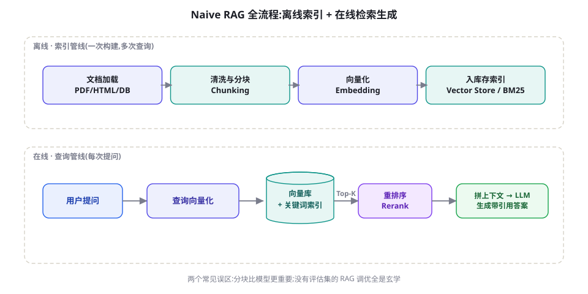
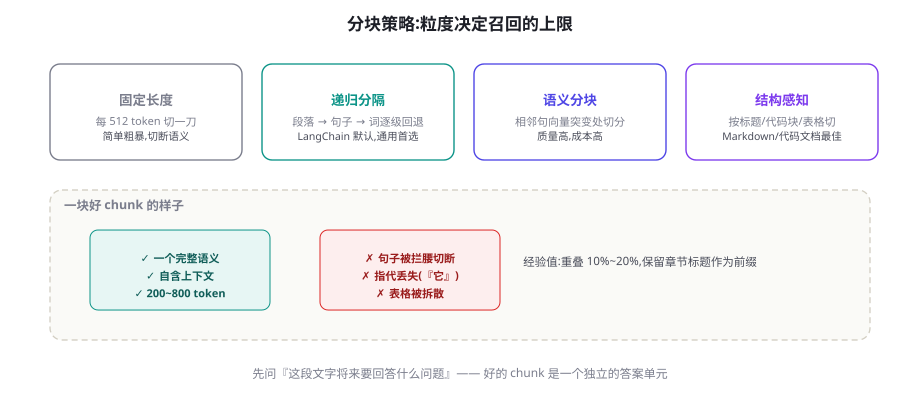
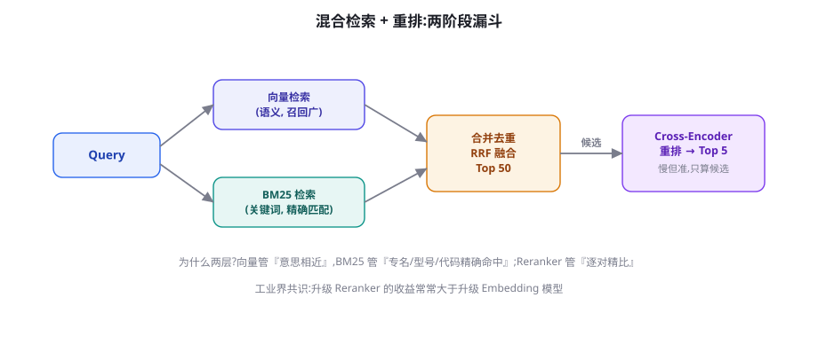

RAG 从入门到进阶：分块、索引、检索与重排
检索增强生成（RAG）是投入产出比最高的 LLM 应用架构：不训练模型，就能让回答基于你的私有知识并附引用。本章打通最小可用管线，然后逐段拆解每个环节的工程要害——分块、混合检索、重排——最后给出驱动迭代的评测方法。
为什么是 RAG：与微调的分工
「让模型懂我的知识」有两条路：把知识训练进权重（微调，第 39 章），或把知识放进上下文（RAG）。对绝大多数场景，RAG 赢在五点：知识即时更新（改文档即生效）、可溯源（每句话能给出处）、权限可控（检索层做 ACL，谁只能查到谁的内容）、成本低（无需训练管线）、可审计（知识错误改文档即可）。微调的领地在「改变行为方式」——语气、格式、技能——而非「注入事实」。两者的关系是互补而非竞争：RAG 管知识，微调管风格与流程；先 RAG 后考虑微调，是几乎所有团队的正确顺序。

最小可用 RAG：80 行 Python
先跑通再优化。下面是一个依赖极简（OpenAI embedding + 内存向量索引）的完整实现，每个环节都对应后文的深化讨论：
import numpy as np
from openai import OpenAI
client = OpenAI()
DOCS = ["""退款政策: 商品签收后7天内可无理由退款,需保持包装完好。
电子产品激活后仅支持质量问题退款。退款3-5个工作日到账。""",
"""会员权益: 年度会员享9折与免运费;生日月双倍积分。
会员资格不可转让,自动续费可随时关闭。"""] # 实际系统从文件/数据库加载
def chunk(text: str, size: int = 120, overlap: int = 20) -> list:
"""滑窗分块:中文按字符数,生产中建议按段落/结构切分"""
step = size - overlap
return [text[i:i + size] for i in range(0, len(text), step)]
def embed(texts: list) -> np.ndarray:
r = client.embeddings.create(model="text-embedding-3-small",
input=texts)
return np.array([d.embedding for d in r.data])
chunks = [c for d in DOCS for c in chunk(d)]
vecs = embed(chunks) # 离线:一次性建索引
def retrieve(query: str, k: int = 3) -> list:
qv = embed([query])[0]
sims = vecs @ qv / (np.linalg.norm(vecs, axis=1)
* np.linalg.norm(qv)) # 余弦相似度
top = np.argsort(-sims)[:k]
return [(chunks[i], float(sims[i])) for i in top]
def answer(query: str) -> str:
hits = retrieve(query)
ctx = "\n\n".join(f"[片段{i+1}] {t}" for i, (t, _) in enumerate(hits))
r = client.chat.completions.create(
model="gpt-4o-mini", temperature=0,
messages=[
{"role": "system", "content":
"仅根据给定片段回答;每句话标注[片段n];"
"片段不足以回答时明确说『资料中未找到』"},
{"role": "user", "content": f"片段:\n{ctx}\n\n问题: {query}"}])
return r.choices[0].message.content
print(answer("电子产品激活后还能退款吗?"))这 50 行里藏着三个最重要的设计决定，恰好也是后面三节的议程：分块方式决定召回上限；「仅根据片段+引用+承认未知」的系统提示词压制幻觉；相似度检索的语义匹配能力与短板（专有名词、精确术语）。下面逐一深化。
摄取管线：脏数据的三个清洗闸门
垃圾进垃圾出——摄取管线的清洗质量直接决定上限。三个必设的闸门：闸门一：结构归一化。PDF 转 text 的版面灾难（双栏错乱、表格变乱码）是 RAG 事故第一大来源；表格密集型文档用专门的解析（版面分析模型或直接要求业务方提供 Markdown/HTML 源），清洗后保留标题层级与表格结构，而不是裸文本。闸门二：去重与版本管理。同一政策的多版本、转发多轮的相似文档会让检索结果自相矛盾；按内容指纹去重 + 按「文档主键 + 生效时间」组织版本，是「新旧政策混淆」问题的根治方案。闸门三：质量评分。给每个块打启发式分（信息密度、完整性、是否目录/页眉页脚残留），低分块不入索引——索引里的「填充物」每一次被检索命中都在浪费 Top-k 名额与模型注意力。三个闸门各写 20 行代码，换来的是后期无数个安静的夜晚。
分块：决定上限的第一张多米诺
分块的核心矛盾是检索粒度 vs 语义完整性：块太小，检索命中但缺上下文（「比率是 30%」——什么的比率？）；块太大，一个块里混多个主题，向量被「平均化」，什么都召不准。工程上按优先级尝试：

| 策略 | 做法 | 适用 | 坑 |
|---|---|---|---|
| 固定长度滑窗 | 每 N token 切，重叠 10%~20% | 兜底方案、纯文本流 | 切断句子与表格；中文按字符切会把词切烂 |
| 递归分隔 | 段落→句子→词逐级回退 | 通用默认（LangChain 默认策略） | 对无空格中文的句界识别依赖标点质量 |
| 结构感知 | 按 Markdown 标题/代码块/表格切 | 文档站、Wiki、代码库 | 超长小节仍需二级切分 |
| 语义分块 | 相邻句向量突变处切 | 高质量要求、预算充足 | 索引成本数倍；对主题渐变文本收益有限 |
工业界最实用的进阶技巧：用小块做检索、把小块所属的父块（整节/整段）送给模型。小块匹配精准（向量不被平均化），父块保证语义完整——两头的优点都拿到。实现只需在索引里多存一个 parent_id。LangChain/LlamaIndex 都有现成组件，自研约 30 行。
查询理解：在检索之前救一救 query
用户的问题常常「不配」被直接检索——口语化、有指代、混合多个意图。在检索前加一层轻量查询处理，是提升召回最便宜的路径。四种手段按性价比排序：
- 指代消解（核心化）：多轮对话里「那它多少钱」必须先改写成「年度会员多少钱」再检索。用一次廉价调用把「历史 + 当前问题」合并为自包含查询，多轮问答系统的必备件。
- 查询扩展：让模型为查询生成 2~3 个同义变体（「退款」→「退货退钱/售后」），多路检索后合并。小成本换回率，尤其对中文同义丰富的场景。
- 意图路由：先判断问题类型——闲聊（不检索）、事实问答（检索知识库）、操作请求（转工具）。把不该检索的问题挡在外面，既省成本又防「检索到无关内容并污染最终回答」。
- HyDE 式改写：让模型先「假装回答」生成一段假设性答案，用答案的向量去检索——答案与文档在语义空间的距离常常比问题更近（HyDE，第 21 章详述）。
混合检索：向量的短板由关键词补
纯向量检索有三个结构性盲区：精确术语（型号「XR-500」被切碎后语义漂移）、罕见专名（人名/内部代号在嵌入空间没有好位置）、否定与数量（「不含防腐剂」与「含防腐剂」向量惊人地相似）。BM25 关键词检索恰好相反——精确匹配强、语义泛化弱。两者互补，混合检索成为生产标配：双路召回，RRF（Reciprocal Rank Fusion）融合排名。

def rrf_fuse(list_a: list, list_b: list, k: int = 60) -> list:
"""Reciprocal Rank Fusion: 按倒数排名融合两路结果
list_a/list_b: 各路已排序的块 id 列表"""
scores = {}
for ranked in (list_a, list_b):
for rank, cid in enumerate(ranked):
scores[cid] = scores.get(cid, 0) + 1 / (k + rank + 1)
return sorted(scores, key=scores.get, reverse=True)
# 用法: 向量 Top-20 与 BM25 Top-20 融合,取前 50 进重排
fused = rrf_fuse(vec_ids[:20], bm25_ids[:20])[:50]重排（Rerank）是漏斗的第二段：用 Cross-Encoder（把「查询+候选」拼在一起打分，比双塔的独立编码准得多）对融合后的 50 条精排，取 Top-5 进提示词。开源可选 bge-reranker、Jina reranker，商用 Cohere Rerank / 各云厂商服务。经验数据：加一个合格的重排器，Top-5 命中率提升常常在 10~30 个百分点量级——这是 RAG 系统里性价比最高的单一升级。代价是每次查询多一次模型推理（30~100ms 量级，50 条候选），通常完全值得。
元数据过滤：向量检索的「SQL WHERE」
真实语料从来不是同质的：文档有类型（政策/FAQ/案例）、时间（2024/2026）、部门（销售/技术）、可见性（公开/内部）。这些结构化字段应该存为元数据并在检索时过滤（先 WHERE 后 KNN），而不是指望语义相似度自己「碰巧」绕开不该给的文档。三个工程要点：
- 过滤在检索层做：主流向量库（pgvector/Qdrant/Milvus/ES）都支持过滤条件下相似检索。绝不要「检索回来再筛」——Top-k 被无关结果占满后，过滤只会让有效结果更少。
- 时间维度单独对待：政策类语料默认按「生效版本」过滤，把过期版本从默认查询里排除（但保留一个「查历史政策」的显式入口）。
- 权限是最严格的过滤器：用户身份 → 可见范围集合 → 作为过滤条件强制注入每一次检索。这个字段不允许被任何「优化」绕过（第 58 章威胁模型会再次强调）。
生成段：压制幻觉的提示词与引用协议
检索再准，生成段失控照样翻车。四条经过验证的生成段纪律：
- 接地指令显式化：「仅根据给定片段回答」必须写，且配合「片段不足时明确说未找到」——后者比前者更重要，它给了模型一条体面的退路，避免硬编。
- 引用协议轻量化：要求每句标注 [片段n]，展示层映射为可点击的来源。不要要求复杂引文格式——格式负担会挤占内容质量。
- 冲突显式化：多片段矛盾时（新旧政策），要求模型指出冲突而非擅自选择——这是 FAQ 类系统升级中最常见的坑（新旧文档并存）。
- 温度调零：问答型 RAG 不要采样创造性；需要「基于资料的写作」时再放开。
选型速览：向量库怎么选
| 选择 | 形态 | 适合 | 注意 |
|---|---|---|---|
| pgvector | Postgres 扩展 | <千万级向量、已有 PG 栈；与业务数据同库做元数据过滤极舒服 | 超大规模后需分区/调优 |
| Elasticsearch / OpenSearch | 搜索引擎(含 BM25+kNN) | 混合检索需求强、运维 ES 熟练的团队 | 向量召回质量与调优深度不如专用库 |
| Qdrant / Milvus / Weaviate | 专用向量库 | 亿级向量、高并发、多租户 | 新增一套运维对象 |
| 云托管(Qdrant Cloud/Pinecone 等) | 托管服务 | 不想运维、快速验证 | 成本随规模上升快;数据出境合规要查 |
| 内存(numpy/FAISS) | 进程内 | 原型、十万级以下 | 无持久化与过滤生态(本章最小示例即此) |
演进案例：一个 FAQ 客服系统的四代架构
把本章内容串成一条真实演进路径。某电商售后团队的知识问答系统四代迭代，每一代的瓶颈与药方都具有普遍性：
| 世代 | 架构 | 暴露的瓶颈 | 下一代的药方 |
|---|---|---|---|
| 一代 | 关键词匹配 FAQ 库 | 换个问法就失配；维护词条到崩溃 | 上语义向量 |
| 二代 | 单路向量 + Top-5 直接回答 | 专名/型号查不到；新旧政策混淆 | 混合检索 + 元数据时间过滤 |
| 三代 | 混合检索 + 重排 + 引用 | 命中率上来了，但多跳问题（「会员折扣能和退款叠加吗」跨两条政策）答不全 | Agentic RAG：多轮检索 + 子问题分解 |
| 四代 | Agentic RAG（第 21 章） | 成本与延迟上升 3~5 倍；简单问题也被「 agentic 税」 | 路由分级：简单走三代管线，复杂走四代 |
这个案例还藏着一条团队协作经验：每一代升级都要先过评测关。二代上线前若没有「无答案题」评测，幻觉率上升两个月后才会被客服团队以投诉形式反馈到技术侧——评测闭环慢一步，信任修复就要花一个季度。
成本与延迟账本
以典型 FAQ 查询为例的全链路开销（量级参考，随规模与厂商浮动）：延迟方面，嵌入一次查询 20~50ms、向量检索 5~20ms、BM25 几乎免费、重排 30~150ms（决定性开销）、生成 0.5~2s——重排与生成占九成，优化次序一目了然。成本方面，每次查询的 token 开销 = 查询本身（可忽略）+ Top-5 片段（约 1~3K token，重头）+ 生成输出。由此得出三条省钱结论：片段数按需给（简单事实题 Top-3 足够，别一律 Top-10）；片段裁剪到「相关段落」而非整节（重排器的分数可以直接当裁剪依据）；前缀缓存对「系统提示词 + 常量片段」同样生效。当并发上来后，语义缓存（相似问题直接返回缓存答案，第 78 章）在 FAQ 场景命中率可达三成以上，是规模期最大的成本杠杆。
换嵌入模型意味着全库重嵌入——百万级块的再索引要花真金白银与数小时窗口，且新旧模型向量不可混用。因此选型时看三个长期属性而非单榜分数：检索质量在你的领域评测集上的表现（不是 MTEB 榜单）、维度与存储成本（1536 维 vs 1024 维差三成存储）、模型的维护状态（是否持续更新、是否宣布弃用）。私有化部署时再加一条：许可证与推理成本。埋一个抽象层（接口不变换实现），让「换嵌入模型」保持为一次可控的运维操作而非全链路改造。
与 Agent 的接线：RAG 作为工具
在前 Agent 时代，RAG 是一条固定管线：用户问题进来，检索一次，生成一次。放进 Agent 语境（第 15-17 章），检索变成模型可以自主决定「查不查、查什么、查几轮」的工具。这个视角转换带来三个直接改进：其一，检索查询由模型改写——它知道「会员退款的折扣计算」应拆成「会员折扣规则」与「退款时折扣处理」两次查询；其二，无结果时模型可以换词重查或告知用户，而不是把空结果硬编成答案；其三，多跳问题（跨政策叠加）通过多轮检索自然解决。代价是延迟与成本上升 2~5 倍——所以第 21 章的 Agentic RAG 会配一路「快车道」，简单问题仍走本章的固定管线。 Routing 的判断标准在两章之间保持一致：能一次检索解决的，绝不 agentic。
表格与多模态内容的检索一瞥
两类内容值得单独交代。表格：向量检索对表格几乎失效（行是碎片，整体超窗）。实用方案有三：把每个数据行「线性化」成一句自然语言（「产品A：价格99元，库存充足」）后入索引，行级命中精准；把表格汇总成描述性摘要块入索引，命中后回读原表；问答时若需精确计算，交给代码执行（第 82 章的数据分析 Agent 模式）而不是让模型「看表算数」。图文混排：多模态嵌入模型（CLIP 系 / 多模态 LLM 生成图像描述）可以把图示纳入检索；更工程化的做法是让多模态模型为每张图生成详细文字描述并作为块的组成部分——检索走文字，展示回原图。这两类内容的共同原则：把非文本信息「翻译」成可检索的文本表示，同时保留回指原始对象的指针。
十分钟做出合格决策：① 从你的语料抽 30 个块 + 写 30 个真实用户问题；② 让候选模型（2~3 个）各自检索，人工数「第一个正确结果的位置」；③ 对比维度成本与最大 token 限制（长块是否需要分段嵌入）；④ 中文语料优先测 bge/m3 系与商用通用模型的对比；⑤ 把选择写进 ADR（架构决策记录），注明评测集位置——半年后有人质疑时，数字会替你说话。
线上运营：三个必须监控的信号
上线后的 RAG 有三个「体检指标」，比用户投诉早发现问题。一、检索命中率代理指标：日志里记录每次检索的 Top-1 相似度分数，其分布的漂移直接反映语料或查询分布的变化——分数整体下滑常常意味着「用户开始问新版本语料里才有的问题」，提示你该更新索引了。二、未找到率：模型「资料中未找到」的回复占比。健康的 FAQ 系统这个数字应该在个位数百分比——为零说明模型在硬编（没退路），过高说明语料缺口或检索故障。三、引用点击率：用户点开引用来源的比例。它是「回答是否真的被用户采用」的最接近代理，也是发现「引用的段落与答案无关」这类静默故障的窗口。三个指标各一条 SQL 就能出，但没有它们，RAG 系统就是一台没有仪表的车。
一个值得亲手做的实验：块大小扫描
花一小时做一次「块大小扫描」，你会从此对分块有手感：固定语料与评测集，让块大小在 {128, 256, 512, 1024} token、重叠在 {0%, 15%} 的网格上变化，跑 Recall@5 并画出热力图。你大概率会看到教科书没写的细节：最优块大小随问题类型漂移——事实查找类偏爱小块（精确命中），解释理解类偏爱大块（上下文完整）。这正是「父子块」与「按查询动态调整注入粒度」的实证动机。把这张热力图存进仓库，它会成为团队里最有说服力的分块决策依据——比任何博客文章都管用，因为它是你自己语料的真相。
评测：RAG 迭代的方向盘
没有评测的 RAG 调优全是玄学。最小评测闭环分两层。检索层（先测，便宜且客观）：构建 50~200 条「问题→应命中的块 id」金标准，跑 Recall@k 与 MRR。任何分块/模型/参数改动，先看这两个数字再谈「感觉」。构建金标准有捷径：让强模型对语料生成候选问题（附来源块），人工花一小时筛掉烂的即可。生成层（后测）：RAGAS 风格的四指标——忠实度（回答是否被片段支撑，反幻觉）、答案相关性（是否切题）、上下文精确率（检索回来的东西多少是真正相关的）、上下文召回率（该找的找到了吗）。前两者评生成，后两者评检索——把责任链分开，才知道该改哪一段。
坑一：只测「能答对的问题」——评测集必须包含 20%「语料里没有答案」的问题，度量模型是否老实说「未找到」，否则你在奖励幻觉。坑二：数据新鲜度 blindness——语料更新后旧索引未重建，系统安静地给出过期答案；给索引进度加版本号与「最后更新时间」展示。坑三：权限泄漏——检索层不做用户级过滤，A 部门的员工问出了 B 部门的薪酬数据；ACL 必须在检索层（查询时过滤），而不是在生成层祈祷模型别提。
三个高频疑问
Q：Top-k 取多少合适？从 k=5 开始，用评测集扫描 k ∈ {3, 5, 8, 10}。规律通常是：k 增大先提升（召回更多线索）后下降（噪音稀释注意力、token 成本上升）。配合重排器时，可以「宽召回窄注入」——检索 k=30，重排后只注入 5。注入的片段数没有万能值，它应该由「问题复杂度」决定并成为评测维度之一。
Q：要不要微调嵌入模型？绝大多数场景不需要。先用「领域评测集 + 现成模型」走到极限；确有大量领域专有词汇且语料充足（>1 万对正例）时，再考虑对比学习微调。微调嵌入的收益通常小于「混合检索 + 重排」的组合，而后者的成本低一个量级。
Q：长文档（几百页 PDF）怎么办？三层结构：文档级元数据（标题、目录、版本）→ 章节级父块 → 段落级子块；检索命子块、注入父块、超长父块再截取「命中段落±前后文」。另一个常被忽略的补制品：文档摘要块——为每份长文档生成一段摘要入索引，让「这份文档讲什么」类问题有处可落。
收尾给一条「 learning order」建议：如果你只有一天时间改进一个 RAG 系统，顺序是——上午搭评测集（没有它其他都是猜测）；中午按本章检查分块（九成系统这里不及格）；下午加混合检索与重排；傍晚跑评测对比写报告。这个顺序本身，就是本章的教学大纲——也是一条可以写进团队 onboarding 文档的 RAG 改进 SOP。
与后续章节的地图
本章的固定管线是地基，后续三层楼：第 21 章把「聪明」加进管线（查询改写、自反思检索、图谱与 Agentic 化）；第 81 章把管线变成完整产品（含 UI 与引用展示）；第 56 章把评测装进 CI。若你的系统已经「够用」，请把预算花在第 21 章的路由与第 56 章的回归测试上——那是从这里到生产之间最短的路。
本章小结
- RAG 与微调分工：RAG 管知识（更新/溯源/权限），微调管行为；先 RAG、后微调，是几乎不变的正确顺序。
- 最小管线五环节：分块→嵌入→检索→重排→生成；每个环节都有独立的优化杠杆。
- 分块决定召回上限：结构感知+父子块是通用最优解；块带面包屑前缀。
- 摄取三闸门（结构归一化/去重版本化/质量评分）与线上三信号是长期稳定的隐形地基。
- 混合检索补向量盲区（术语/专名/否定），RRF 融合；重排器是性价比最高的单一升级，典型收益 10~30 个百分点。
- 生成段四纪律：接地指令、轻量引用、冲突显式化、温度调零。
- 评测两层：检索层 Recall@k/MRR 先行，生成层忠实度与相关性兜底；评测集必须含「无答案」题。
- 线上三信号（相似度漂移/未找到率/引用点击率）各对应什么故障场景？各自怎么设告警阈值？
- 查询理解四手段（核心化/扩展/路由/HyDE）是提升召回最便宜的路径；元数据过滤与权限检查必须在检索层。
自测题
- 用户反馈「答案是错的」，你如何用四指标定位是检索问题还是生成问题？
- 为什么「不含防腐剂」与「含防腐剂」向量相似？你的系统里哪类 query 会踩这个坑？
- 父子块模式牺牲了什么、换来了什么？在什么语料上收益最小？
- 设计一个电商售后的 RAG 评测集：写出 5 条问题的类型分布（含一条「无答案」题与它的期望行为）。
- 为「产品参数对比」类问题设计检索方案：表格行线性化、摘要块与代码执行各扮演什么角色？
- 画出你们语料的「文档 → 章节 → 块」三层结构，标注哪一层放元数据、哪一层做检索单元、哪一层做注入单元。
参考文献与延伸阅读
- Lewis, P. et al. (2020). Retrieval-Augmented Generation for Knowledge-Intensive NLP Tasks. NeurIPS 2020. arXiv:2005.11401
- Karpukhin, V. et al. (2020). Dense Passage Retrieval for Open-Domain Question Answering. EMNLP 2020. arXiv:2004.04906
- Es, S. et al. (2023). RAGAS: Automated Evaluation of Retrieval Augmented Generation. arXiv:2309.15217; github.com/explodinggradients/ragas
- Robertson, S. & Zaragoza, H. (2009). The Probabilistic Relevance Framework: BM25 and Beyond. Foundations and Trends in IR.
- Cormack, G. et al. (2009). Reciprocal Rank Fusion outperforms Condorcet and individual Rank Learning Methods. SIGIR 2009.